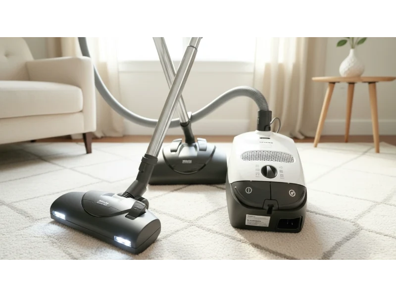

Pet hair has a way of getting everywhere. It sticks to carpets, hides in corners, and floats through the air. If you live with pets, you already know that a regular vacuum often struggles to keep up. Hair wraps around brush rolls, suction feels weak, and allergens stay behind.
That's where choosing the right vacuum for pet hair makes a real difference. In this guide I break down what actually works in real homes with pets. Not just surface-level features, but how these machines handle fur, dander, and daily mess. You'll see how each model performs, what makes it useful, and where it fits best.
By the end, you'll know which vacuum matches your cleaning style, home layout, and number of pets.
Best 5 Vacuums for Pet Hair
Finding the right vacuum for pet hair means looking beyond basic suction. You need tools that handle fur, prevent tangles, and improve air quality. The following options are chosen based on real performance, durability, and pet-focused features.
- Dyson Ball Animal 3
- Dyson V15 Detect
- Shark AI Ultra (AV2511AE)
- Bissell Pet Hair Eraser Turbo Plus
- Miele Classic C1 Cat & Dog
Now let's take a closer look at these vacuums.
1. Dyson Ball Animal 3
If you're tired of manually cutting tangled fur off your vacuum's brush every week, the Dyson Ball Animal 3 is a game-changer. It focuses on deep carpet cleaning, strong suction, and advanced filtration, helping pet owners manage shedding, allergens, and daily mess more effectively.
Built for deep cleaning in multi-pet homes
If you have more than one pet, cleaning becomes a daily task. The Dyson Ball Animal 3 is designed for exactly that situation.
Its standout feature is the de-tangling Motorbar. Most vacuums struggle when long pet hair wraps around the brush roll. Over time, this reduces performance and forces manual cleaning. This model solves that problem by using polycarbonate vanes that actively remove hair as you vacuum.
In real use, this means:
- Less time cutting hair off the brush
- Consistent performance on carpets
- Better pickup of embedded fur
- Strong suction that pulls hair from deep fibers
Pet hair doesn't just sit on top of carpets. It gets pushed deep into fibers, especially in high-traffic areas like living rooms. The Dyson Ball Animal 3 uses very strong suction power to pull that hair out. This is especially useful for thick carpets, rugs under furniture, and areas where pets sleep.
You'll notice the difference when vacuuming the same spot twice. The high-torque suction doesn't just skim the surface — it penetrates deep into carpet fibers to pull out embedded dander and ground-in dirt that standard vacuums often miss.
HEPA filtration for cleaner indoor air
Pet owners often deal with more than just visible hair. Dander and allergens can affect air quality. This vacuum includes whole-machine HEPA filtration, which traps 99.99% of particles — including pet dander, dust mites, and fine allergens. For households with allergies, this feature is not just helpful, it's necessary.
Where it fits best
- You have multiple pets
- Your home has a lot of carpet
- You need strong, consistent cleaning power
It's not the lightest option, but it delivers reliable performance where it matters most.
2. Dyson V15 Detect

The Dyson V15 Detect brings a level of precision to pet hair cleaning that corded vacuums often miss. It highlights smart sensors, visual cleaning aids, and adaptive suction that make everyday cleaning faster and more precise.
Cordless design with advanced cleaning tech
Cordless vacuums are popular because they are easy to use. But many of them lack the power needed for serious pet hair. The Dyson V15 Detect changes that. It combines strong suction with smart technology, making it one of the most advanced cordless options available. You can move freely between rooms, clean stairs easily, and reach tight spaces without dealing with a cord.
Laser technology reveals hidden pet hair
One of the most interesting features is the Fluffy Optic cleaner head, which uses a green laser. It sounds simple, but it solves a real problem. Pet hair on hard floors is often hard to see, especially in low light. The laser makes tiny particles and hair strands visible, so you don't miss spots.
In real homes, this leads to:
- More thorough cleaning
- Better results on hardwood and tiles
- Less guesswork while vacuuming
Smart sensor adjusts suction automatically
The Dyson V15 Detect uses a piezo sensor to detect how much dust and debris is being picked up. When it senses more dirt or pet hair, it increases suction. When the floor is cleaner, it reduces power to save battery. This is especially useful if you clean different surfaces like carpets, rugs, and hard floors in one session.
Where it fits best
- You want convenience and mobility
- Your home has mixed flooring
- You prefer quick, regular cleaning instead of long sessions
It may not fully replace a heavy-duty upright for deep carpet cleaning, but it excels in versatility and ease of use.
3. Shark AI Ultra (AV2511AE)

This robot vacuum simplifies daily pet hair cleaning through automation. It focuses on self-emptying features, smart navigation, and consistent floor coverage, helping pet owners maintain cleaner spaces without manual effort every day.
Hands-off cleaning for busy pet owners
If pet hair builds up quickly in your home, daily vacuuming can feel exhausting. The Shark AI Ultra is designed to handle that routine automatically. It works as a robot vacuum, which means it cleans your floors on its own. You can schedule it to run every day, even when you're not at home. This helps prevent pet hair from piling up in the first place.
Self-cleaning brush roll reduces hair tangles
Hair wrap is a common issue in most vacuums, especially with long pet hair. This model includes a self-cleaning brush roll that helps prevent that problem. The self-cleaning brush roll actively removes hair wrap as it cleans, so the vacuum maintains full suction and cleaning efficiency without you having to stop and manually clear the tangles.
Self-empty base for long-term convenience
One of the most practical features is the XL self-empty base. It can store up to 60 days of dust and pet hair. So instead of emptying the bin after every cleaning session, you can forget about it for weeks. This is especially helpful if you don't want frequent maintenance, travel often, or prefer a low-effort cleaning system.
Matrix Clean improves coverage
Pet hair often gets stuck deep in carpets or missed in corners. The Shark AI Ultra uses Matrix Clean technology, which makes multiple passes over the same area. This increases the chances of picking up stubborn fur that a single pass might miss, leading to better carpet cleaning and more consistent results across rooms.
Where it fits best
- You want automated daily cleaning
- Your home has open floor spaces
- You need help maintaining cleanliness between deep cleans
4. Bissell Pet Hair Eraser Turbo Plus

Bissell focuses heavily on pet cleaning products, and this model reflects that. The Pet Hair Eraser Turbo Plus is built with features that target real pet-related problems — fur removal, ease of disposal, and reaching tricky areas — making it a practical option for everyday use.
Tangle-free brush roll for smoother cleaning
Like higher-end models, this vacuum includes a Tangle-Free Brush Roll. It helps prevent hair from wrapping around the brush, which is one of the biggest frustrations with pet hair cleaning. In daily use, this means less time spent maintaining the vacuum, more consistent suction, and easier cleaning sessions.
Cyclonic pet hair spooling system
One unique feature is the Cyclonic Pet Hair Spooling System. Instead of letting hair scatter inside the dustbin, it gathers it into a clump. This makes it easier to empty without touching the mess. For pet owners, this solves a common frustration — no need to pull hair out by hand, making disposal cleaner and more hygienic.
Useful tools for hard-to-reach areas
Pet hair doesn't stay on floors. It collects in corners, under furniture, and on upholstery. This vacuum includes specialized tools like an LED-lit crevice tool, which helps you see and clean dark spaces. This is especially helpful for cleaning under couches, reaching tight corners, and removing hair from stairs.
Affordable but practical
Compared to premium brands, this model is more budget-friendly. But it still offers features that directly address pet hair problems. It works well if you want good performance without a high price, need a reliable everyday vacuum, or have moderate shedding pets.
5. Miele Classic C1 Cat & Dog

For households with long-haired dogs, a bagged canister vacuum delivers quiet, long-lasting performance. The Miele Classic C1 Cat & Dog focuses on durability, odor control, and effective pet hair removal, making it ideal for users who prefer reliability and low noise during cleaning.
Built for long-term reliability
Miele is known for building durable machines, and the Classic C1 Cat & Dog is no exception. This is a bagged canister vacuum that uses high-quality components designed to last for many years. In fact, many users report using Miele vacuums for 15 to 20 years.
Quiet operation with strong cleaning power
One of the biggest advantages is how quiet it is. Most powerful vacuums are loud, which can scare pets or make cleaning uncomfortable. This model delivers strong suction while keeping noise levels low. This makes it easier to clean without disturbing pets, vacuum early or late in the day, and maintain a calmer home environment.
Tools for pet hair on multiple surfaces
The "Cat & Dog" version includes a handheld turbo brush. This is useful for cleaning stairs, upholstery, and pet beds. It helps lift hair from fabric surfaces where standard floor heads may struggle.
Odor control with Active AirClean filter
Pet odors can linger even after cleaning visible hair. This vacuum includes an Active AirClean filter with charcoal, which helps neutralize smells. This is especially useful if you have indoor pets, odors build up over time, and you want fresher indoor air.
Where it fits best
- You prefer a quiet vacuum
- You want a long-lasting investment
- You like bagged systems for cleaner disposal
Quick Comparison Table
This side-by-side view helps you quickly compare cleaning style, key strengths, and ideal use cases so you can narrow down the right vacuum for pet hair based on your home and routine.
| Vacuum Model | Type | Best For | Key Feature | Ideal Use Case |
|---|---|---|---|---|
| Dyson Ball Animal 3 | Upright | Deep cleaning | De-tangling Motorbar + HEPA | Multi-pet homes with carpets |
| Dyson V15 Detect | Cordless | Versatility | Laser detection + smart suction | Mixed floors and quick cleanups |
| Shark AI Ultra (AV2511AE) | Robot | Daily maintenance | Self-empty base + Matrix Clean | Automated cleaning routines |
| Bissell Pet Hair Eraser Turbo Plus | Upright | Budget pet cleaning | Hair spooling system + pet tools | Affordable everyday use |
| Miele Classic C1 Cat & Dog | Canister | Longevity | Quiet motor + odor filter | Long-term, low-noise cleaning |
How to Choose the Best Vacuum for Pet Hair
Choosing the right vacuum means looking at real-world needs like suction power, hair management, and ease of use.
Focus on suction power and brush design
Strong suction is important, but it's not the only factor. Pet hair often gets stuck in carpets and fabrics. A good vacuum needs consistent suction across surfaces and a brush roll that lifts embedded hair. Features like de-tangling brush rolls or turbo brushes make a noticeable difference. Without them, hair can stay trapped even after multiple passes.
Look for anti-tangle technology
Hair wrap is one of the biggest problems with pet vacuums. If the brush roll gets clogged, performance drops quickly. Models with anti-tangle systems — like de-tangling bars or self-cleaning brushes — save time and effort. These features are especially useful if your pets have long hair.
Consider filtration for allergies
Pet hair is visible, but allergens are not. Dander, dust, and fine particles can affect indoor air quality. A vacuum with HEPA filtration helps trap these particles instead of releasing them back into the air. This is important if you or someone in your home has allergies, if pets spend time indoors, and if you want cleaner air along with cleaner floors.
Match the vacuum type to your lifestyle
- Upright vacuums: Best for deep cleaning carpets
- Cordless vacuums: Good for quick, flexible cleaning
- Robot vacuums: Ideal for daily maintenance
- Canister vacuums: Quiet and long-lasting
Think about maintenance and ease of use
A vacuum should save time, not add extra work. Look for features like easy-to-empty dustbins, self-empty bases, and lightweight designs. A robot vacuum reduces daily effort, while a cordless model makes quick cleanups simple.
Budget vs long-term value
Price matters, but so does durability. Some vacuums cost more upfront but last longer and perform better over time. Others are more affordable but still offer useful pet-specific features. It's better to choose based on your cleaning needs, how often you vacuum, and the number of pets you have.
FAQ
What type of vacuum works best for pet hair?
Upright vacuums are great for deep carpet cleaning, while cordless models are better for quick cleanups. Robot vacuums help maintain cleanliness daily. The best option depends on your home and cleaning routine.
How often should I vacuum if I have pets?
In most homes with pets, vacuuming at least 2 to 3 times a week works well. If your pet sheds heavily, daily cleaning or using a robot vacuum can help control buildup.
Do I really need a vacuum with HEPA filtration?
If you have allergies or want cleaner indoor air, HEPA filtration is very useful. It traps fine particles like pet dander that regular filters may miss.
Why does pet hair get stuck in vacuum brushes?
Pet hair, especially long strands, wraps around brush rolls during use. This can reduce performance. Vacuums with anti-tangle or self-cleaning brushes help prevent this issue.
Is a robot vacuum enough for pet hair?
A robot vacuum is great for daily maintenance, but it may not replace deep cleaning. Many pet owners use it alongside a stronger upright or cordless vacuum.
Conclusion
Pet hair cleaning becomes much easier when you use the right vacuum. Each model in this guide solves a different problem:
- The Dyson Ball Animal 3 handles deep carpet cleaning in heavy shedding homes
- The Dyson V15 Detect offers flexibility and smart cleaning features
- The Shark AI Ultra keeps floors clean daily with minimal effort
- The Bissell Pet Hair Eraser Turbo Plus provides practical features at a lower cost
- The Miele Classic C1 Cat & Dog delivers quiet, long-term performance
The best choice depends on your home, your pets, and how you prefer to clean. If you deal with constant shedding, a strong upright or automated robot can make a big difference. If you prefer quick and easy cleaning, a cordless option fits better.
Choose based on what you need most, and cleaning pet hair will feel far less overwhelming.